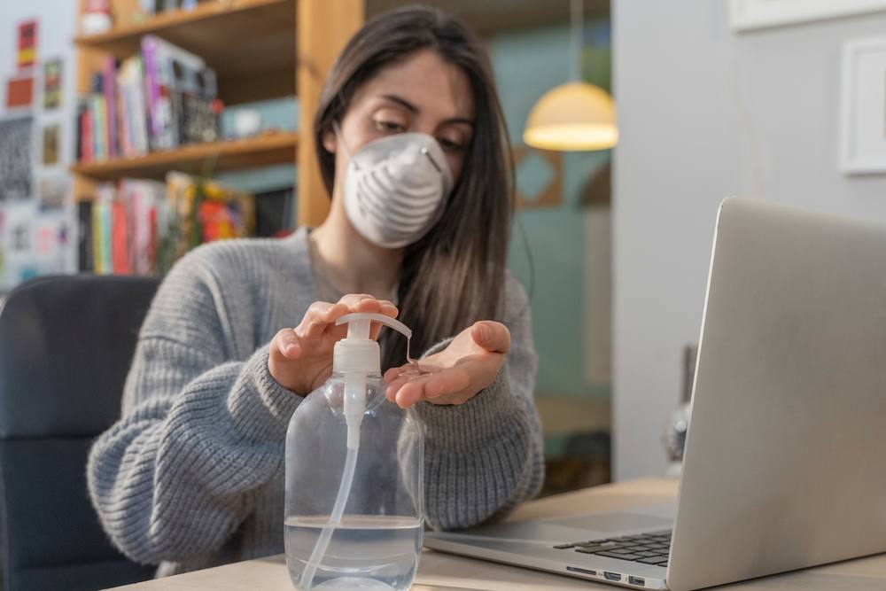

¿Qué significa aislarse?

El aislamiento es una medida importante que adoptan las personas con síntomas de COVID‑19 para evitar infectar
a otras personas de la comunidad, incluidos sus familiares. El aislamiento se produce cuando una persona que tiene
fiebre, tos u otros síntomas de COVID‑19 se queda en casa y no va al trabajo, a la escuela o a lugares públicos.
Lo puede hacer voluntariamente o por recomendación de su dispensador de atención de salud. Sin embargo, si vive
en una zona con paludismo (malaria) o dengue, es importante que no ignore la fiebre. Busque ayuda médica. Cuando
acuda al centro de salud use una mascarilla si es posible, manténgase al menos a un metro de distancia de las demás
personas y no toque las superficies con las manos. En caso de que el enfermo sea un niño, ayúdelo a seguir este consejo.